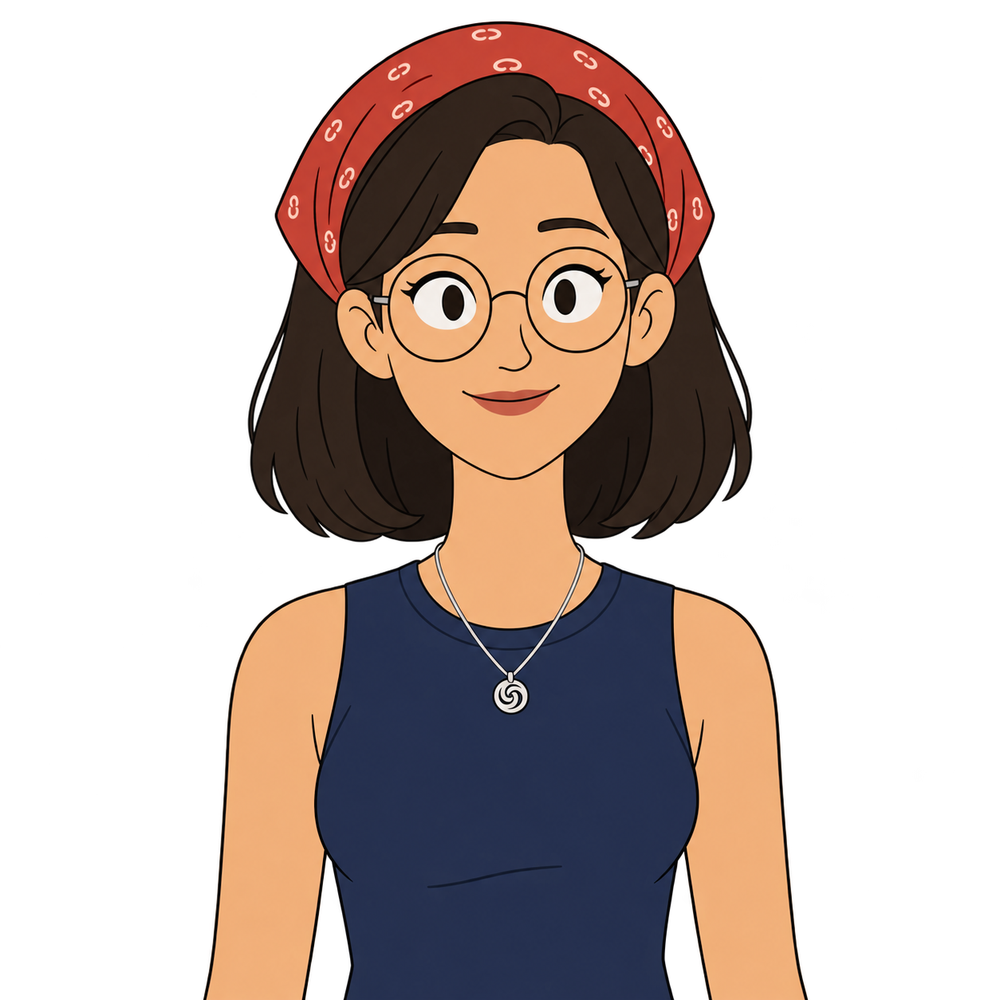
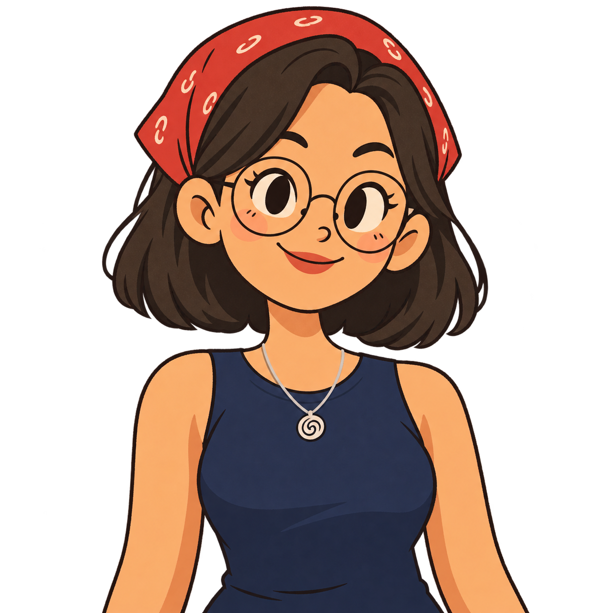
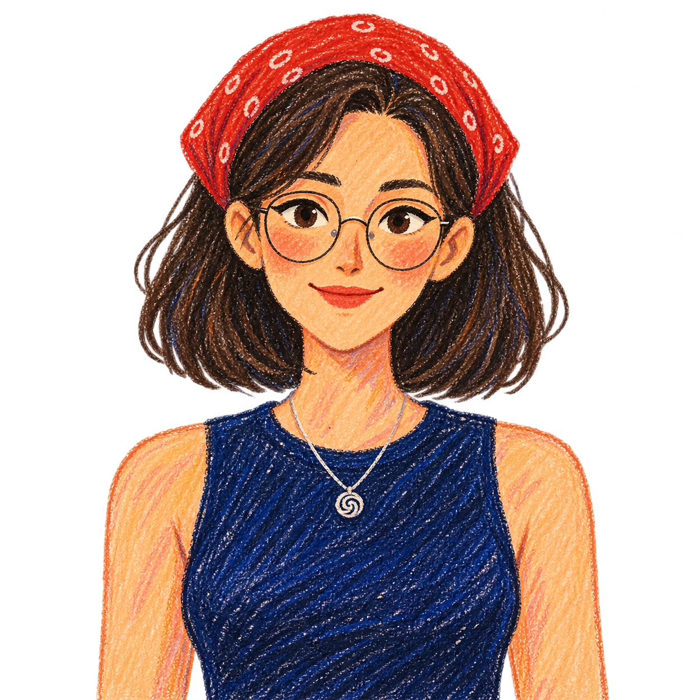

Clean animation
Fine contours, simple eyes and a longer face. The closest to the animated scene references.
Same bandana, glasses and navy top. Compare on a flat cream background, then open each version in the portfolio and scroll.

Fine contours, simple eyes and a longer face. The closest to the animated scene references.

Rounder shapes and oversized eyes. A more playful, mascot-like presence.

Visible strokes and irregular edges. More expressive up close; finer texture softens at small sizes.